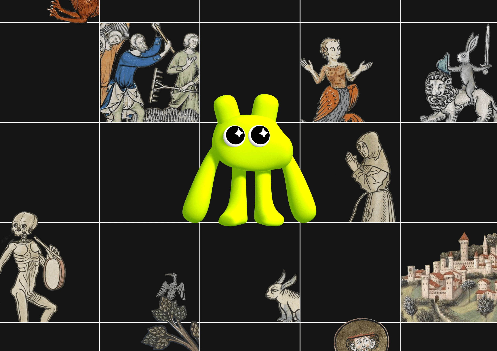
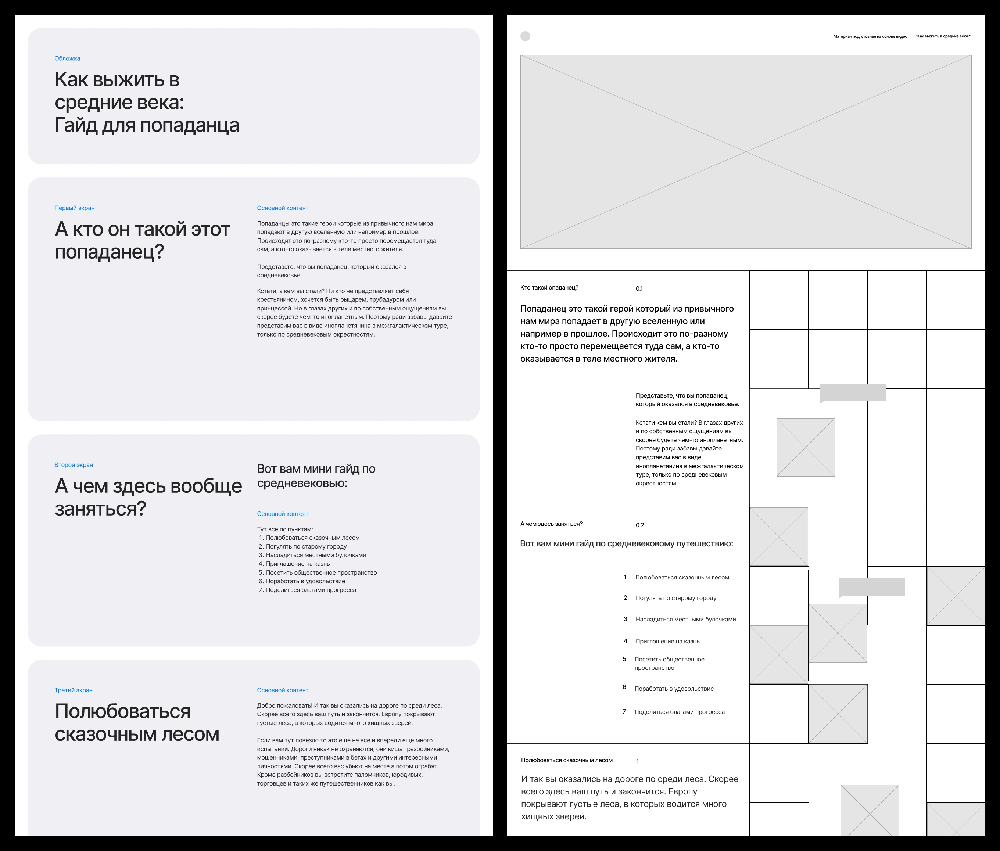
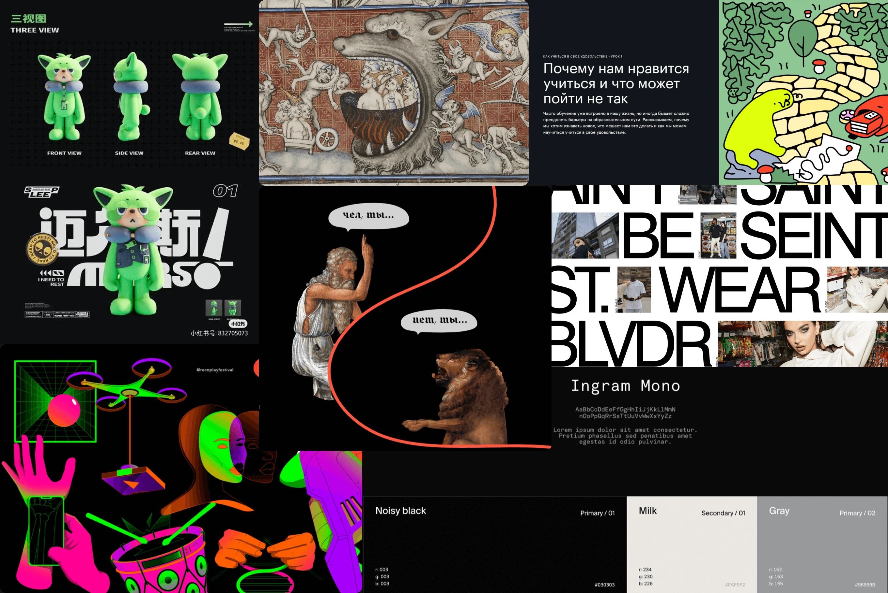
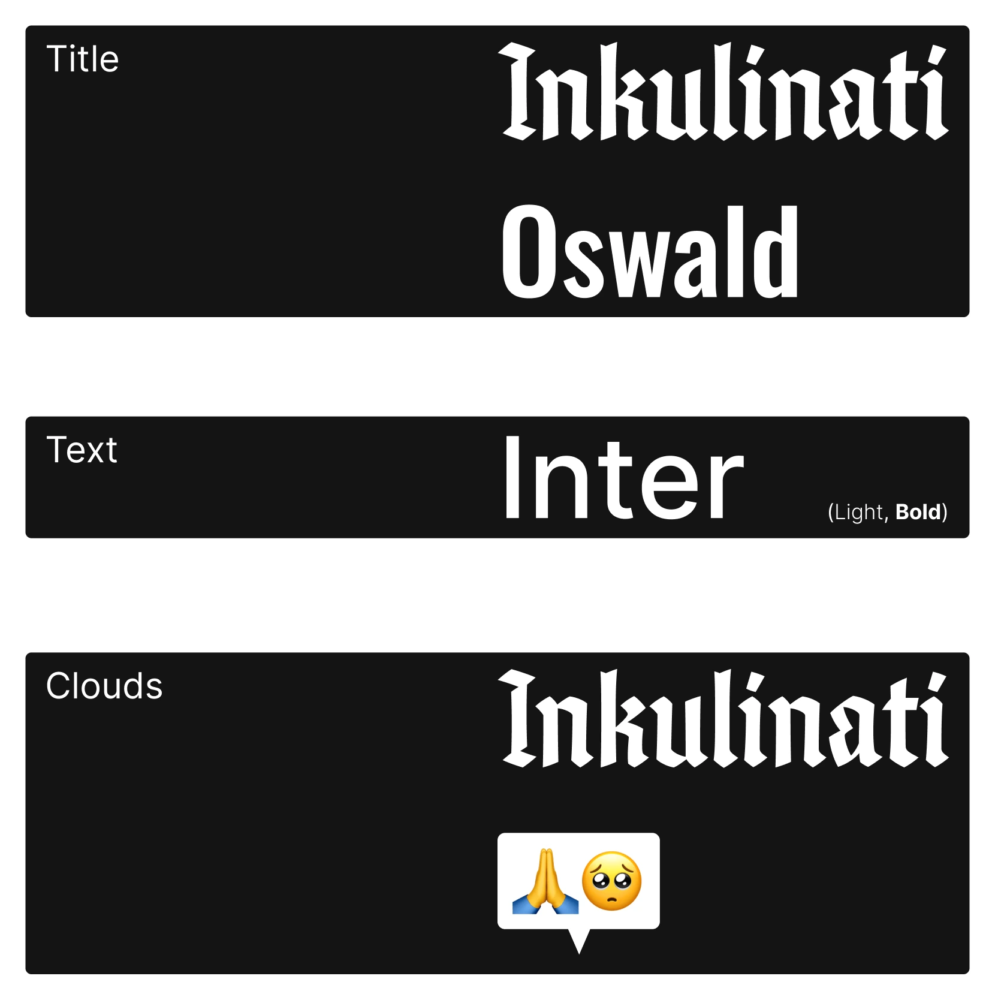
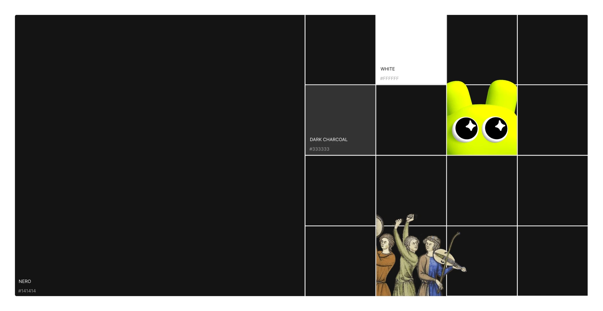
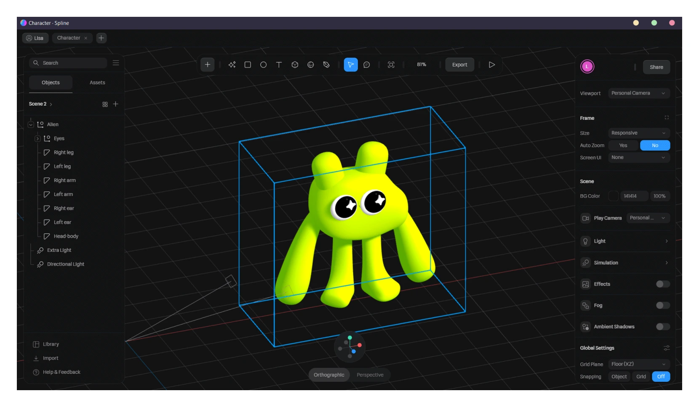
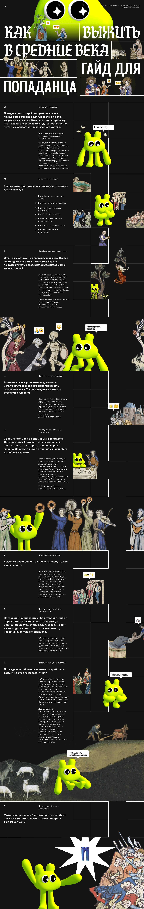

Идея проекта
Этот проект вдохновлен видео Как выжить в Средневековье от Правого Полушария Интроверта. Моей целью было создать увлекательный лонгрид, сочетающий современный дизайн и 3D-графику со средневековыми образами.

Вайрфрейм
Сначала я поработала с текстом из видео над его организацией в четкую иерархию содержания. На основе этого я набросала макет в виде шахматной доски, на которой будет идти повествование, дополняя текст визуалом.

Концепция
Межгалактическое путешествие в средневековые времена с инопланетянином в качестве главного героя.
Я создала инопланетного 3D персонажа, чтобы он контрастировал со средневековыми изображениями. Это слияние футуристических и исторических элементов придает концепции свежую и интригующую динамику.

Элементы айдентики
Типографика сочетает современный и средневековый стили. Для основного текста я использовала стандартный шрифт Inter, чтобы обеспечить удобство чтения.

Интерфейс выполнен в нейтральных цветах, подчеркивающих визуальную составляющую. Макет разделен на две части: правая панель — для текста, а левая, напоминающая шахматную доску, — для ведения сюжета.

Сам инопланетный персонаж был создан в Spline в разных вариациях.

Лонгрид
Работа над адаптивом для мобильного разрешения была непростой. Я заменила большую часть изображений на видоизмененые варианты и добавила функцию прокрутки для больших изображений, чтобы сохранить их пропорции.
